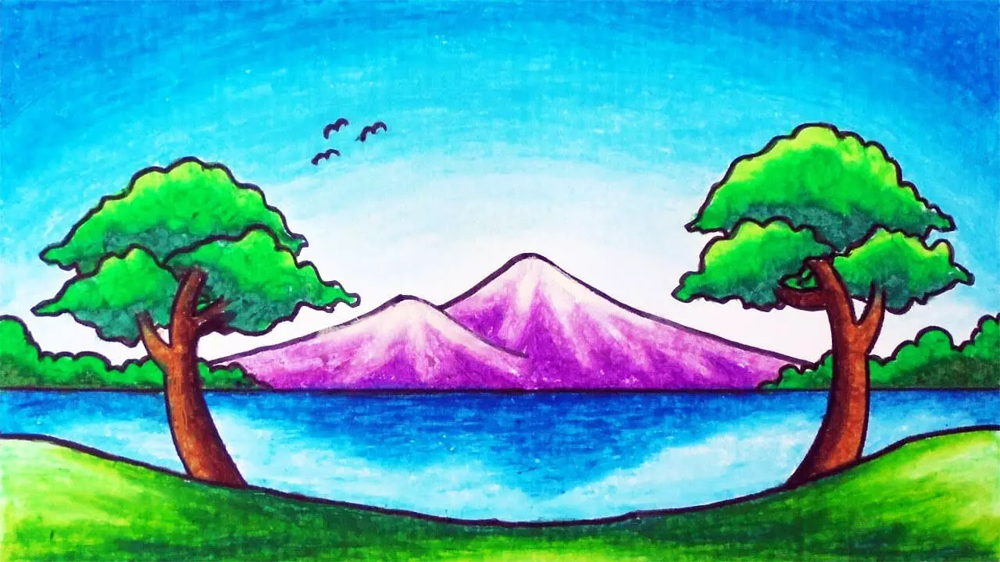

Gambar



Halaman ini adalah sebuaha halaman website sederhana yang menampilkan beberapa gambar serta menyediakan navigasi ke berbagai halaman lain. untuk bagian desain tata letak ini menggunakan css.